Proofs and Explanations¶
If you just want to get things done without worrying about why the calculations are exactly like they are then you're in the wrong place, but if you got interested in the math itself you may enjoy reading some of this stuff.
I used a bunch of spooky formulas in this tutorial. Some of them are definitions of e.g. or , but in this chapter we'll focus on those that aren't and prove that they actually work.
Pythagorean Theorem¶
This is a well-known proof and I like it because it's simple.
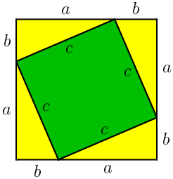
Handy thing: 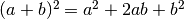
Proof:
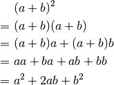
We can calculate the total area of the above square in a couple different ways:
- The square's sides are each 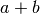, so the area must be 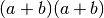.
- The square consists of the green square whose area is 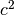 and 4 yellow triangles with area 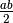 each. Total area is 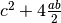.
We must get the same area with both ways, so we get this equation:
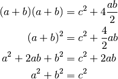
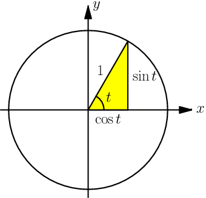Two ways to define sine and cosine¶
The y axis of the picture at right goes up because this explanation isn't really useful for programming; it's just an explanation for people who are wondering how and appear both in a unit circle and in triangles.
In the unit circle trig section
we defined and with a unit circle, but then in
the triangle trig section
we defined them with a triangle. If we apply the triangle stuff to the
angle  of the picture at right, we get this:
of the picture at right, we get this:
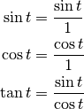

The first two formulas are obviously true with any , but the last one is a
bit more interesting. We found another way to define , and it
also works with a triangle:
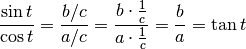
Accurate Sine and Cosine Values¶
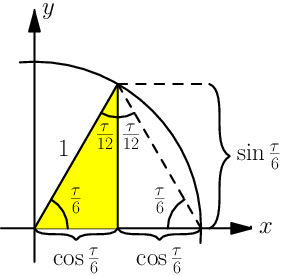Here I said that 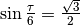 and 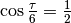. I'm sorry to disappoint you, but there's no general and easy way to find accurate and values by hand. However, in many cases there's something special about the angles that allows us to do some other tricks.
The angle in question is , a sixth of a turn. If a triangle has three sides with equal lengths, the angles will be each. That's why we can complete the triangle drawn in unit circle like in the image. The angles at top are 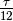 because two angles added together is .
The radius of the unit circle is 1, so we get this on the  axis:
axis:
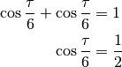
Now we can apply the Pythagorean theorem (proved above) to the yellow triangle and figure out 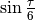:
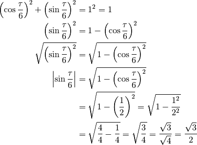
We know that is positive, so 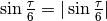.
Which functions have derivatives?¶
In the derivative chapter I said that most functions you'll come across have a derivative. Let's be a bit more specific. The derivative doesn't exist in these cases:
-
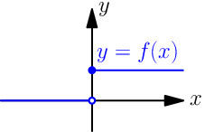
The function is not continuous; that is, the graph consists of multiple lines. For example, this function is not continuous at and thus 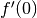 is not defined:
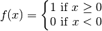
-
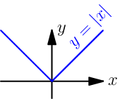
The graph of the function has a spike in it. Derivatives describe "growing speed" and it isn't clear how fast the values grow on top of a spike. For example, the absolute value has a derivative everywhere except at .
Of course, there are more precise definitions about continuity and "spikes", but this should be enough to give you some kind of idea about the limitations.
Derivative Rules¶
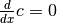¶
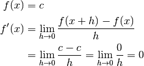
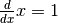¶
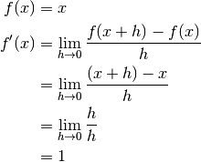
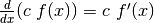¶
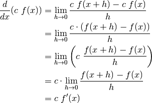
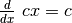¶
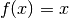
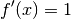
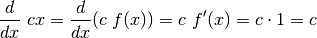
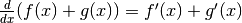¶
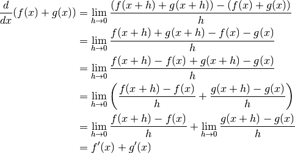
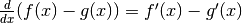¶
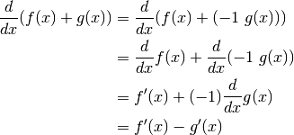
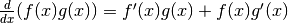¶
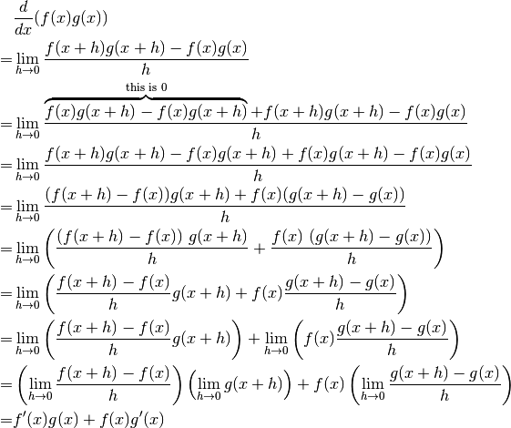
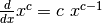¶
It's easy to prove that this works for an individual  value. For example,
our very first derivative example shows that 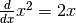. Here
I'll prove that this works with all positive integers using a powerful
technique known as induction.
value. For example,
our very first derivative example shows that 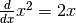. Here
I'll prove that this works with all positive integers using a powerful
technique known as induction.
Let's start by showing that this works with e.g. 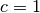:
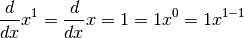
Next we'll prove that if the rule works at 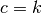 then it also works
at 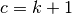 where  is a positive integer. Let's write things down just to
be clear:
is a positive integer. Let's write things down just to
be clear:
We assume: 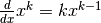
We'll prove: 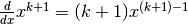
Let's use the 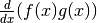 and 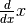 rules we proved above and the assumption.
We proved that if then . Now we know that the rule works when , and then if we plug in we know it works when , and so on.
Note that we only proved that the rule works when is a positive integer,
but it also works when is e.g.  . It's possible to prove
that the rule isn't limited to positive integers, but that's beyond the
scope of this tutorial.
. It's possible to prove
that the rule isn't limited to positive integers, but that's beyond the
scope of this tutorial.
Handy thing:
Proof:
In this case we need to plug in and .
¶
We could prove this with the rule because , but we proved the rule only for positive integers. Let's survive without it.
 ¶
¶
We could use the rule again because is actually , but as before, we haven't proved that it works at so we'll do this without it.
¶
This rule looks simple, but it's surprisingly difficult to prove correctly while keeping it easy to read. Here's the best proof I managed to make.
Let's start by plugging stuff into the definition of derivative:
Note that I used  with one limit and with the other; the limits are
completely independent of each other and I wanted to make it stand out. In
other words, it doesn't matter how and relate to each other as long
as both of them approach 0.
with one limit and with the other; the limits are
completely independent of each other and I wanted to make it stand out. In
other words, it doesn't matter how and relate to each other as long
as both of them approach 0.
The rule can be used only if exists, and thus must be continuous; see the derivative existence stuff above. So, if (read: h approaches 0) then and .
If we put all this together we can set . Now it's time to calculate .
This looks nice, but we are not done yet! We divided by . What if
when but ? Practically it means that
the graph is a horizontal and straight line around because
with a small . So, we can say that on this
interval ( is a constant) and prove this case separately:
Look carefully: because we differenciated
with respect to , so was actually yet another constant because it
doesn't depend on the value of .
¶
We need these rules that are proved above:

Now this is quite straight-forward.